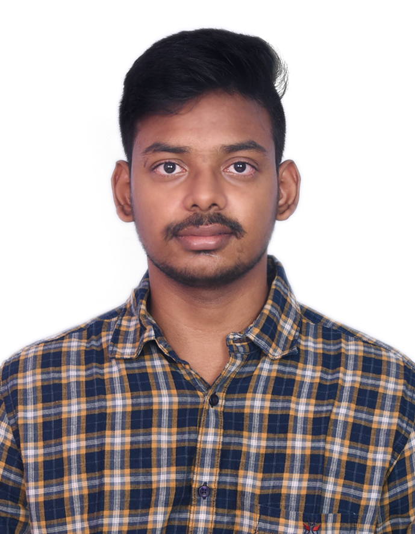

VAKAMUDULA VENKATESH
Motivated and detail-oriented Linux Administrator with a solid foundation in AWS, Terraform, and CI/CD.
Passionate about troubleshooting, automation, and cloud technologies, aiming to leverage my Linux
expertise to provide top-tier technical support in a dynamic cloud environment.
Skills
- Linux Administration
- AWS - EC2, S3
- Docker Containerization
- Terraform
- CI/CD - Jenkins
Projects
- CI/CD Pipeline Implementation using Jenkins & Tomcat: Set up and configured CI/CD
pipeline using Jenkins to
automate the deployment of my resume on an AWS EC2
instance running Tomcat server. Configured Jenkins on a
separate EC2 server to trigger automatic deployments
whenever updates were pushed to GitHub, ensuring
seamless and efficient application delivery.
- Static Website in AWS S3 Bucket: Defined Terraform to provision the S3 bucket,
configure bucket policies, and enable website hosting, ensuring a scalable and repeatable deployment
process.
Certifications
- AWS Cloud Practitioner (CLF - C02)
- Terraform Associate 003
- Udemy Course Completions
Additional Skills
- Quick Learner
- Time Management
Education
- B.Tech in Electronics and Communication Engineering - Bharath University, Chennai (CGPA - 8.6,
2019-2023)
- Intermediate - Sri Chaitanya Junior College, Visakhapatnam (CGPA - 9.7, 2017-2019)
- Class 10th - Sri Chaitanya High School, Vijayawada (CGPA - 9.5, 2016-2017)